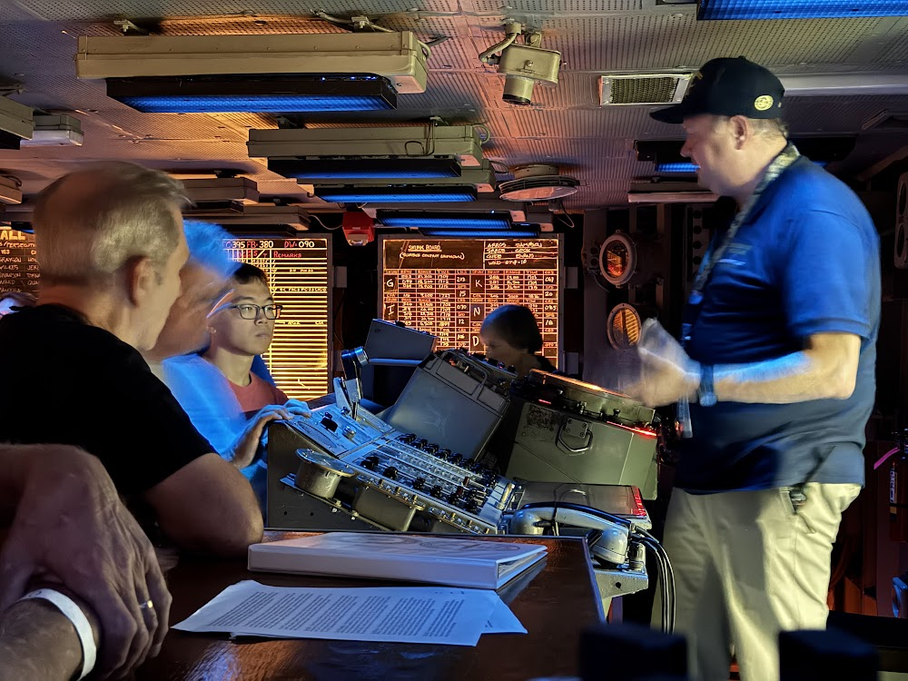
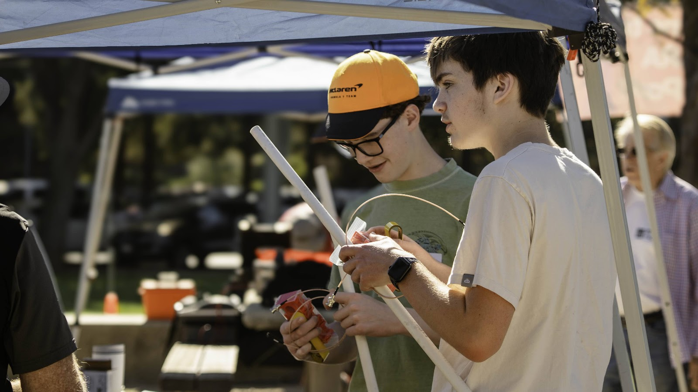
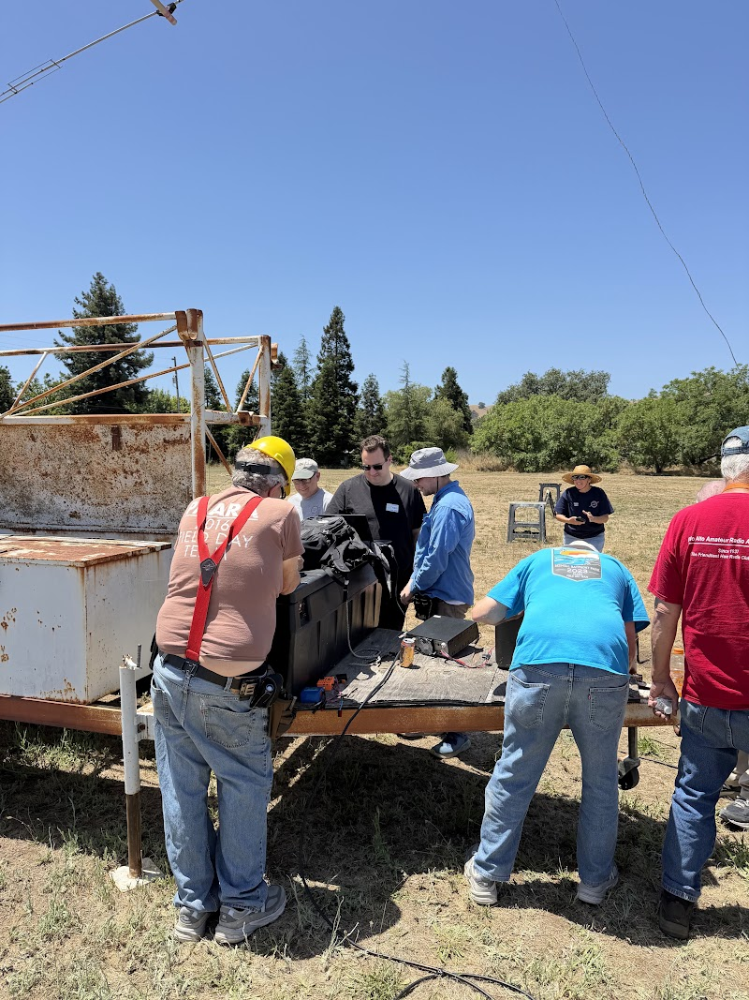

Established 1937
The friendliest club around
For nearly ninety years, Bay Area hams have gathered as PAARA to talk radio, hear a good presentation, and get on the air. Tune in any Monday night.
Scalable Phased Arrays with QuadRF
Friday, 6 November 2026 · 7:00 PM Pacific
Presented by Roy Gross KM6EOO · Cubberley Community Center and Zoom
Join on ZoomDetails & raffleA long history on the air
- 1937The club is first formed.
- 1956Incorporated as a California nonprofit.
- 1971The oldest PAARAgraphs in the archive.
- 2006The club station becomes W6ARA.


